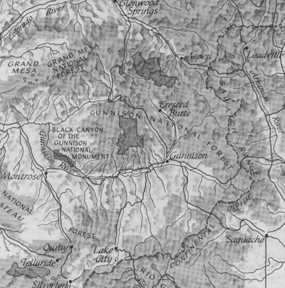

Haunted at Timberline was created for those ready for a high-altitude virtual vacation in Colorado, with some
historical interest. Hopefully the truly interested will make a real visit to the ruins at timberline, before they
disappear altogether (they're deteriorating fast). Visit at dusk, when you have the best chance of encountering the ghost of
an old prospector or hearing a tommyknocker, still at work in the mines.
For details about the photo on the home page, see Animas Forks.
I have attempted to present the best-preserved original sites and to keep the geography covered as "high up" as possible.
Thus I confined my journeys to the ghost towns and mining camps west of Fairplay and south of Glenwood Springs (see map below).
Note that sites like
Independence, Ashcroft, Ironton,
Animas Forks, Alpine Tunnel,
and Whitepine Cemetery
are part of formal restoration programs by a variety of groups, but in general the unpopulated ghost towns and mining camps of the great Colorado mining
days shall deteriorate away to nothing soon—especially if people keep taking the fine, aged wood for picture frames,
and the remaining railroad and mining hardware as collectibles.

I cite various references in the "about" pages, but the key references I used to find the locations presented and to develop the text in the "about" pages are:
- Stampede to Timberline, by Muriel Sibell Wolle (first published in July, 1949)
- Guide to the Colorado Ghost Towns and Mining Camps, by Perry Eberhart (first published in 1959)
- Tracking Ghost Railroads in Colorado, by Robert Ormes (first published in 1975)
- Drills and Mills: Precious Metal Mining and Milling Methods of the Frontier West, by Will Meyerriecks (first published in June, 2003)
The best way to find the locations of the ghost towns, passes, and cemeteries presented on this Web site is to go to
http://maps.google.com/ and type in the name of the location.
hauntedattimberline.com is designed and maintained by Bradford Harrison (me). I am the author of several popular publications, including:
Sonny's Utopia
The Last Orgy
Visit my other popular Web site: http://www.newsflanks.com and my personal Web page https://bradfordharrison.github.io.